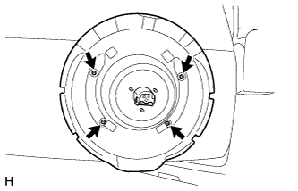

ТЕЛЕКАМЕРА (задняя) (для моделей с кронштейном запасного колеса) > УСТАНОВКА |
| 1. УСТАНОВИТЕ ЗАДНЮЮ ТЕЛЕКАМЕРУ В СБОРЕ |
Установите заднюю телекамеру и закрепите ее болтом.
Подсоедините разъем, чтобы установить жгут проводов заднего окна № 2.
| 2. УСТАНОВИТЕ КРОНШТЕЙН ТЕЛЕКАМЕРЫ |
Установите кронштейн телекамеры с задней телекамерой и закрепите его 2 болтами.
Установите зажим и подсоедините разъем.
| 3. УСТАНОВИТЕ ЧЕХОЛ ЗАПАСНОГО КОЛЕСА № 2 |
|  |
Установите чехол запасного колеса № 2 и закрепите его 4 винтами.
| 4. УСТАНОВИТЕ ЗАПАСНУЮ ШИНУ |
| 5. УСТАНОВИТЕ ЧЕХОЛ ЗАПАСНОГО КОЛЕСА |
 |
Введите в зацепление 8 захватов, чтобы установить чехол запасного колеса.
Переместите рычаг.
 |
Заверните болт.
| 6. УСТАНОВИТЕ НАКЛАДКУ ЧЕХЛА ЗАПАСНОГО КОЛЕСА |
Введите в зацепление 7 захватов, чтобы закрепить накладку чехла запасного колеса.
| 7. ОТРЕГУЛИРУЙТЕ ПОЛОЖЕНИЕ ЗАДНЕЙ ТЕЛЕКАМЕРЫ (для моделей с системой монитора бокового обзора) |
Отрегулируйте положение задней телекамеры (Нажмите здесь).